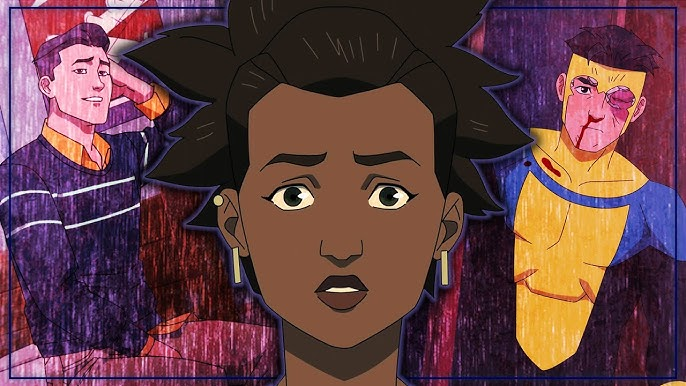

Message d'Amber

De: Amber Bennett
Mark, c'est Amber. Les choses sont... complètement folles ici. J'ai eu si peur.
Je me suis cachée dans notre endroit spécial, tu sais, celui où on s'est sentis vraiment... invincibles... ensemble pour la première fois ?
Le mot de passe pour entrer, c'est ce sentiment lui-même. Dépêche-toi, s'il te plaît !
Parfois, la clé n'est pas technique, mais humaine. Lisez entre les lignes.